Lisbon video production and Lisbon videographer services by Munjiri Videos. Videos designed to bring you customers made by Katy and Eugene, with 8+ years of experience including filming for CNBC and Michelle Obama.
If you're looking for video production for your brand, you don't want someone that doesn't understand marketing, wastes your time or makes you feel awkward on camera.
Hi! We're Katy and Eugene, we understand how business, marketing and storytelling work, so not only will your videos look and sound amazing they will actually bring in customers. We reply promptly to your messages, won't disrupt your business day and help you feel confident on camera.
Our beautiful documentary style videos will do the work for you online so you can focus on the things you love!
We have over 8+ years experience and clients who keep coming back. We love working with small businesses and grass roots organizations, but our work has also been featured by larger clients such as CNBC and Michelle Obama.
While we love filming locally in the capital, we also capture stories across the country. If you need production services outside of the city, check out our work as a videographer Portugal, where we service regions from the north to the center.
We find your one big message and focus on the one single thing you want people to remember so they don't get confused.
We show why people should care, customers don't buy objects, they buy how those objects make their lives better. We focus on the real-life problem you solve.
A video can't be for everyone. We figure out exactly who your people are and build the whole story just for them.
We make it interesting using a simple storytelling structure to make people curious, hook their attention, and get them to take action.
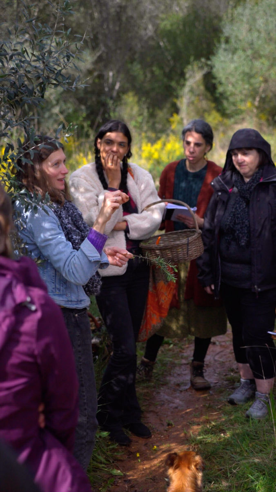
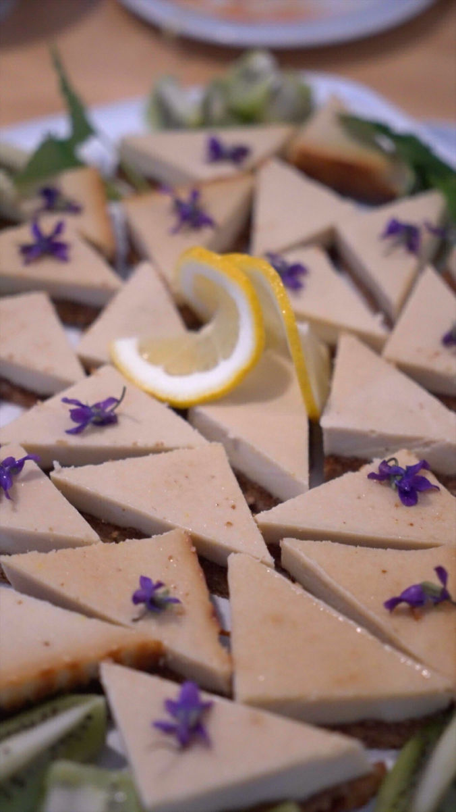
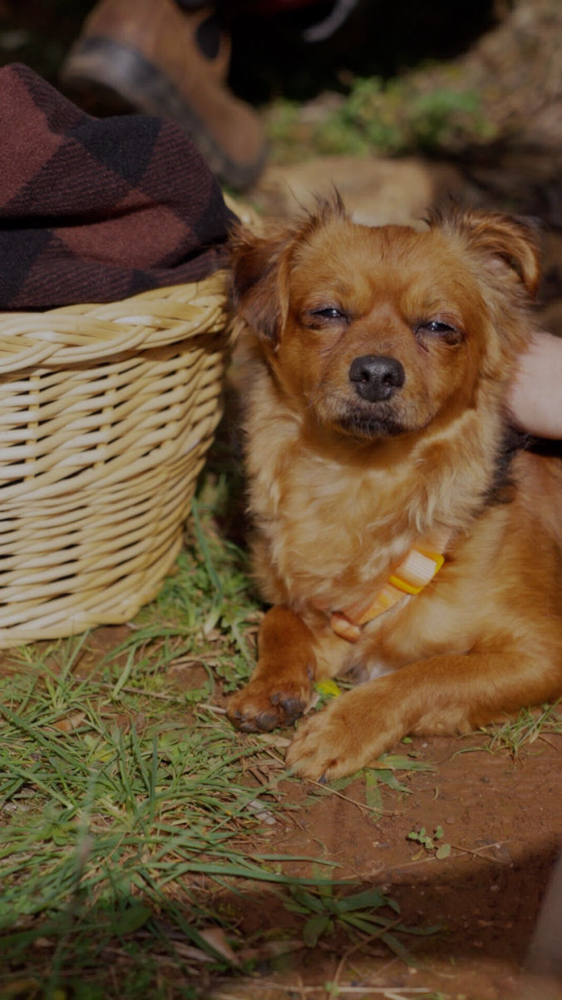
We communicate fast and clearly so you always know what is happening next.
We map out your video using a simple structure that gets peoples attention and grows your business
Hook →Problem → Solution → Result
Before the cameras even arrive, we sort out all the logistics, locations, equipment, shot lists, and interview questions.
Our style is like a documentary. We don't come in and take over your workspace or make you stop what you're doing. We just capture the real, everyday reality of your business.
Because everything is prepped and we keep things natural, shoot day feels easy. You don’t have to stress about what to say, you can just focus on sharing your story.
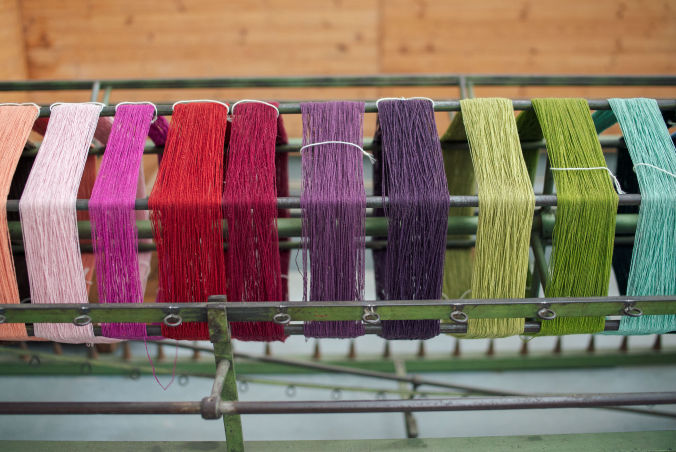
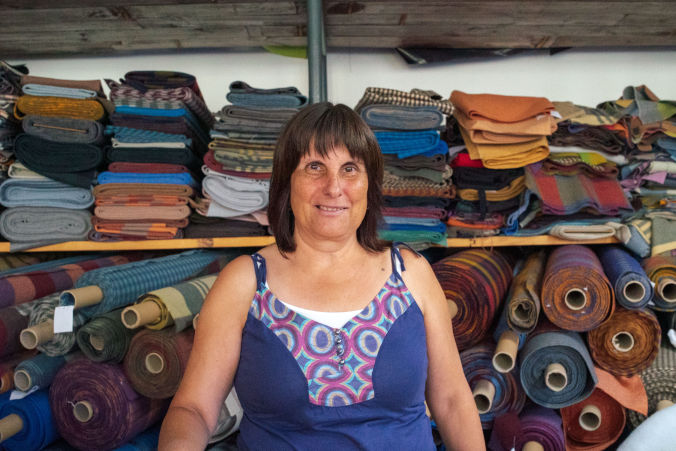
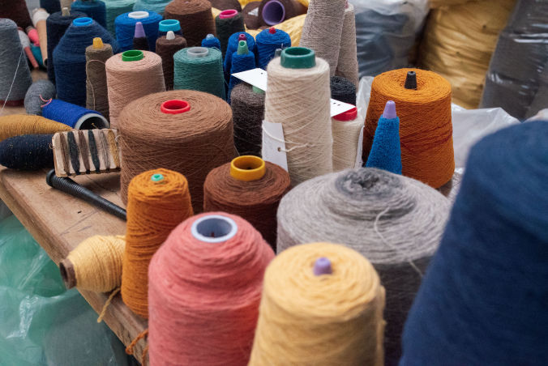
Almost everyone feels weird when a camera is pointed at them. Here is how our Lisbon video production gets you out of your head so you can just be yourself:
Trying to memorize a word-for-word script makes you look rigid. We just use 3 or 4 simple bullet points to keep you on track so you can speak naturally in your own words.
Looking directly into a lens feels weird. You just look right at us sitting next to the camera, turning it into a normal conversation with a friend.
The fear of making a mistake causes the most anxiety. You have complete permission to mess up loads of times because we can just cut out the stumbles and keep your best moments.
People naturally get fidgety and wonder what to do with their hands. We often have you hold a coffee mug, a pen so you don't get distracted by thinking about what to do with your hands.
If you get completely stuck on a sentence, we just ask, "What are you actually trying to say here?" You'll explain it perfectly, forgetting the camera is even there.
Web Videos
A one-time investment in evergreen brand videos that live on your website, helping visitors understand your business whenever they find you.
Help people understand you.
A homepage story that introduces who you are, what you do, and why your work matters.
Help people trust you.
Real conversations with your customers, clients, or community that show the impact of your work better than any sales copy could.
Help people find you.
Useful videos that answer the questions people are already searching for, helping your website appear in Google while keeping visitors engaged.
From charity stories to drone footage, we create website videos that help people understand what makes your work unique.
Social Media Videos
For brands who have stories to share but don't always have the time to turn them into social media video content. We help transform everyday moments into engaging videos that keep your community connected.
Stay visible.
A monthly collection of short, engaging videos for Instagram, TikTok, LinkedIn, or Facebook that keeps your business active and your audience coming back.
Keep creating.
Film quick videos on your phone whenever inspiration strikes, and we'll transform them into polished content with clean edits, captions, and music.
From travel stories and events to behind-the-scenes, we help you turn real experiences into engaging social media content your audience wants to follow.
Tailored Video Projects
Not every project fits neatly into one category, most of the time we create packages tailored exactly to our clients needs.
If you don't get the strategy right first, even high-quality footage struggles to work. Here is the exact, step-by-step system we use as Lisbon videographer's to set your project up for success:
1. Strategy
We figure out exactly what you are selling, how it helps people, and who needs to see it.
Instead of cramming too much into one clip, we find one clear objective like getting a customer to buy or a donor to care.
Then we turn this research into a solid storytelling structure:
Hook → Problem → Solution → Result
2. Planning
We map out every detail before the cameras turn on.
Organising filming logistics, such as the Lisbon rules and regulations, to scouting the perfect backdrops, check out our Lisbon locations filming guide for inspiration. Equipment prep, precise shot lists, and conversational interview questions.
We handle the heavy mental lifting here so that filming day feels entirely organized and smooth.
3. Filming
While we manage the framing, studio lighting, crisp audio capture, and color settings behind the scenes, you don't have to worry about a thing.
Our real focus is making you and your team feel completely comfortable on camera.
The best videos don't come from perfect, robotic performances. They happen when people stop performing, relax, and just share their real experiences.
4.Editing & Delivery
We piece your story together by selecting the best interview soundbites, layering visuals, matching the perfect music and color correcting.
For social media content especially, we make sure every single second earns its place to stop people from scrolling past.
We work closely with you through a simple review loop to make any final adjustments until it feels completely right.
5. Finished Video
Once the video is finished, we don't just email you a link and leave you to struggle with the technology. If you want we can log in and place your new videos directly onto your website, YouTube channel, or social media apps for you.
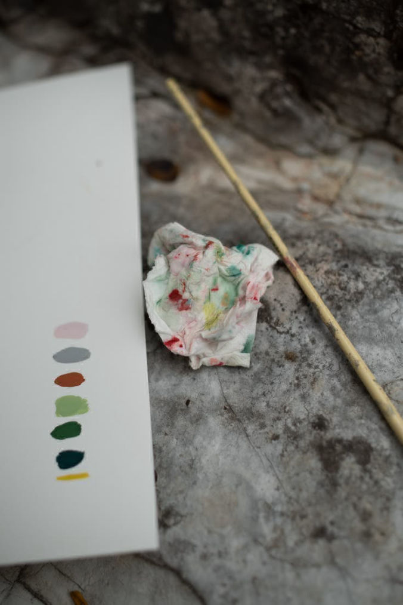
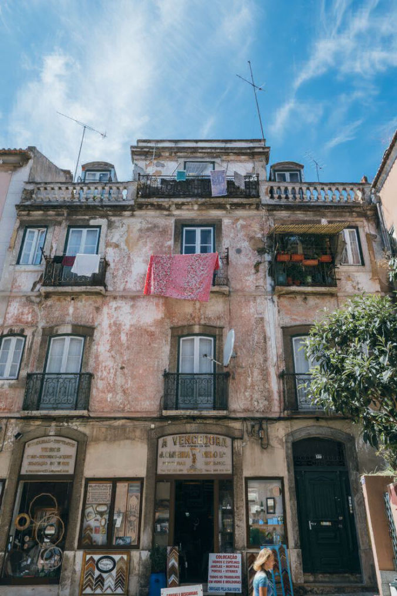
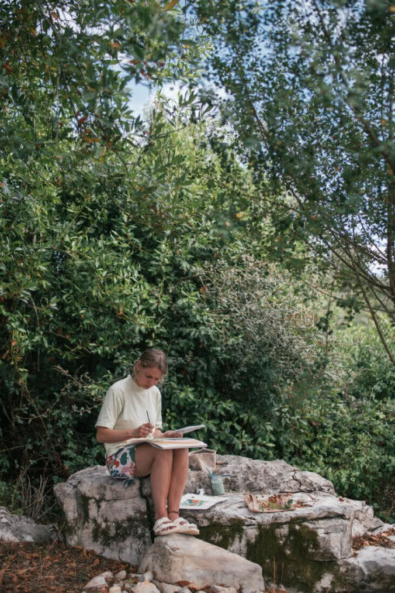
“Despite the fact that the situation was different to what we’d imagined, Katy was fantastic at taking my brief and totally running with it. She never made a fuss, she just did what she could and completely blew our minds with the work that she produced – goose bumps and wet eyes all round PB World!”
Claire Wouters, Pic's Peanut Butter
"Katy did a superb job and rapidly understood what we were trying to achieve and provided excellent ideas about how to create a stunning visual feast, backed up by a perfectly judged soundtrack and a compelling narrative. She made great use of a range of film making techniques to highlight the unique features of Embo House and its location, creating an atmosphere which fully chimes with our target clientele. She was innovative and flexible in her approach, but also very focused on getting the detail and message right. Last, but not least, Katy was fun to work with despite the need to complete the project in a short, intense time-frame. We can not recommend her highly enough."
Ginny Knox , Embo House
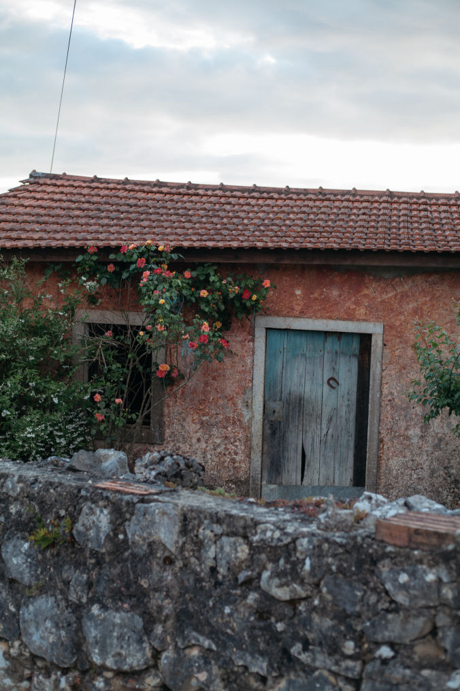
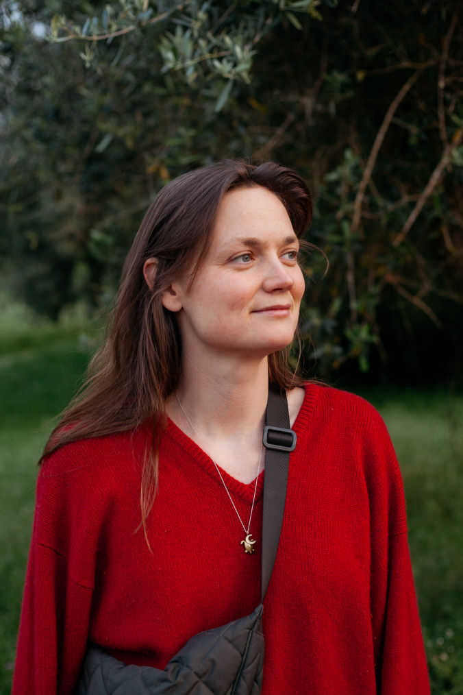
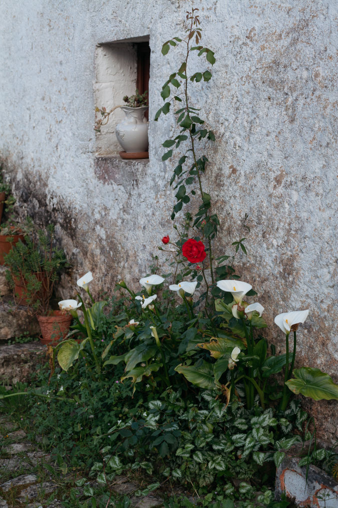
We’d love to hear what you’re building, creating, or trying to change. Tell us a little about your project and we’ll chat through how video could help.
katy@munjiri.com